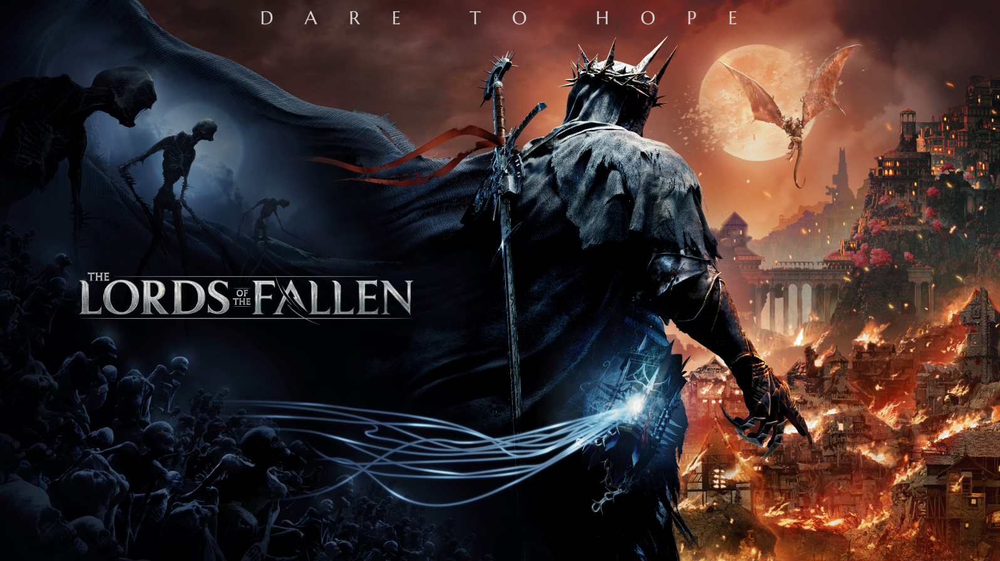
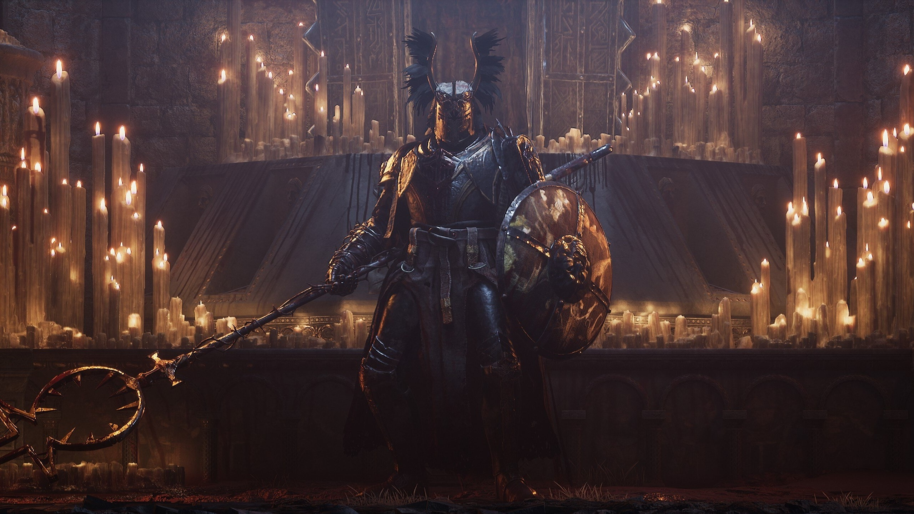
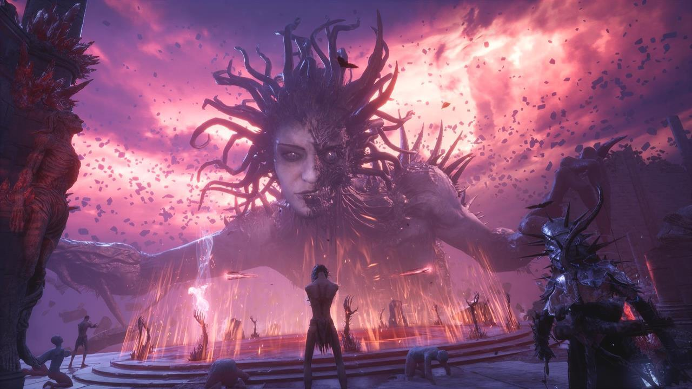
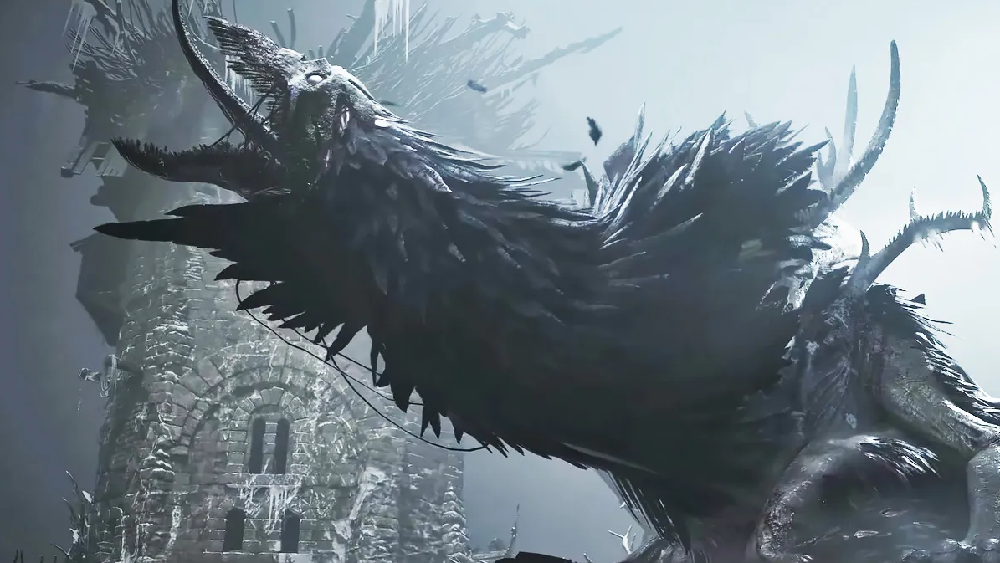

Lords of the Fallen

Credited as Combat Designer, also worked as Technical and Level Designer. Worked closely with the Creative Director, Executive Producer, Lead Designer, Lead Programmer, Animators, and Sound Designers.
As a Technical Designer on "Lords of the Fallen," I contributed to the design and implementation of key gameplay systems. My primary responsibilities included:
- Designing and scripting boss combat mechanics, ensuring challenging and engaging encounters for players.
- Building enemy AI in Unreal Engine with Behavior Trees, State Trees, EQS and AI Perception, and abilities with the Gameplay Ability System, all data-driven.
- Collaborating with the art and programming teams to integrate visual and technical elements seamlessly.
- Creating detailed design documents and prototypes for new features and gameplay systems.
- Conducting playtests and gathering feedback to refine and balance game mechanics.
- Mentoring junior designers and providing guidance on best practices in game design and development.
Boss fight - Tancred, Master of Castigations

What I did: Combat design, including AI with BT, combos, phases, attack types and animation tweaking, balancing. Animation design. Worked closely with animators, making new animations, tweaking and polishing existing ones. Sound integration.
Boss fight - Adyr, the Bereft Exile

What I did: Combat design, balancing. Enemy design; Adyr worshipper, AI with BT and EQS. Level design. This level was totally designed by me from scratch. Worked closely with environment team. Animation design. MoCap sessions. Sound integration.
Boss fight - The Hollow Crow

Combat design, including AI, phases, attack types and animation tweaking, balancing. Animation design. MoCap sessions. Sound integration.
Working on "Lords of the Fallen" has been an incredible journey, allowing me to combine my passion for game design with my technical skills to create memorable gaming experiences.